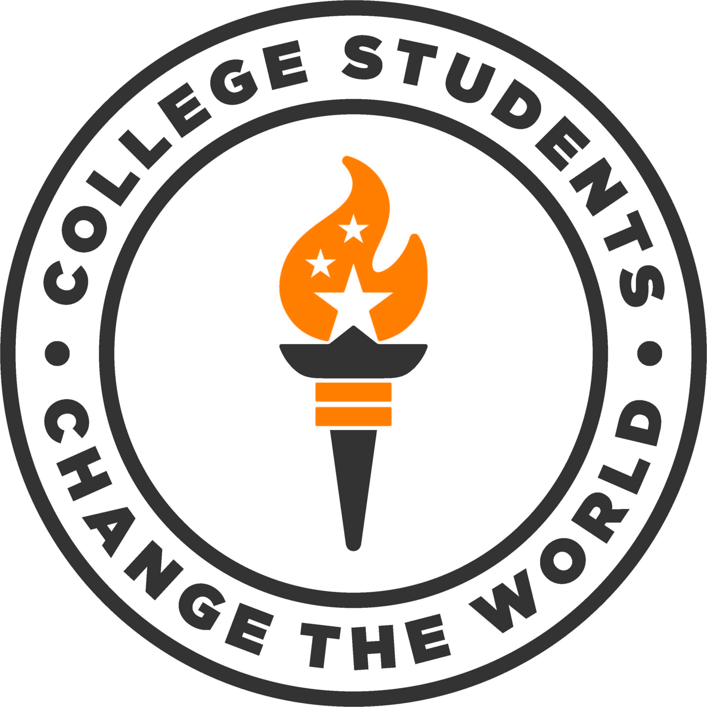

Students can and have made a difference in the world we live in today. College Students Change the World believes that students' stories offer relatable exemplars who inspire others to become leaders of positive impactful change. We are a community of educators and students providing online resources that facilitate the collection, organization, and sharing of student leadership success stories to educate the personally and socially leaders of tomorrow. Please cite all resources found on this website as designated for each source.
Contact Dr. Karen D. Boyd, at kboyd14@utk.edu to join us in collecting and sharing these stories.